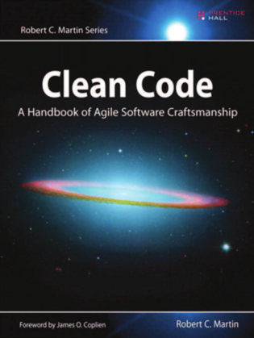
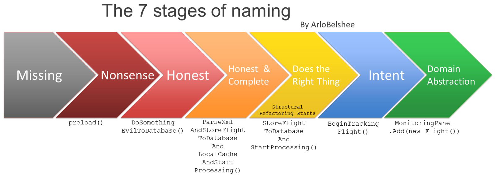
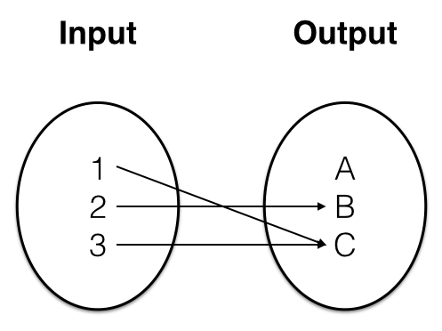
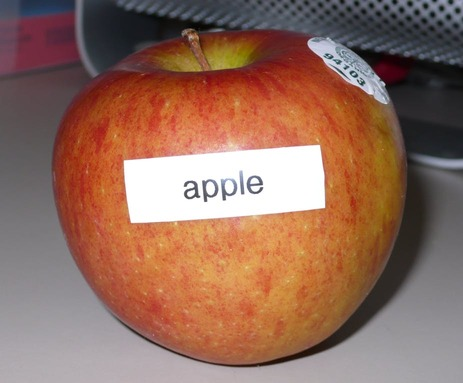
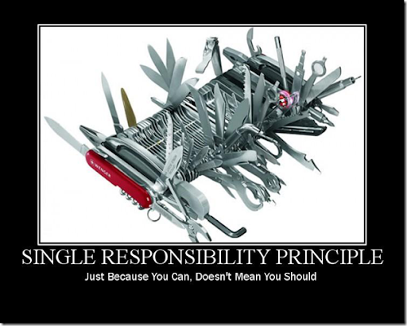
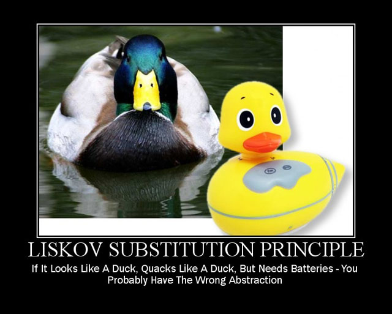
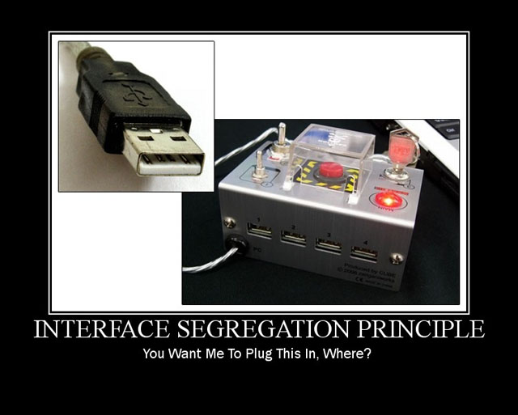
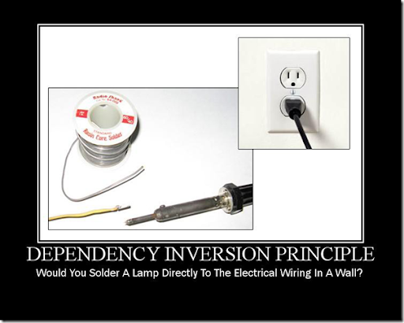
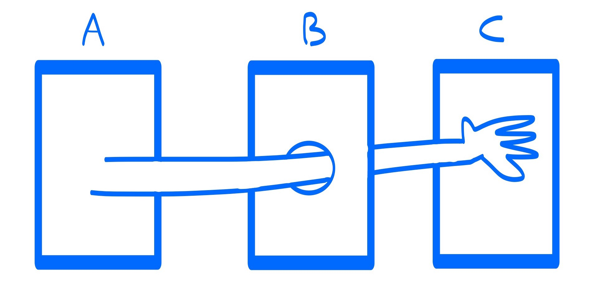

Chap 3 : Clean Code
M4104 - PEL : Agilité et bonnes pratiques de programmation
Institut Universitaire de Technologie de Bayonne et du Pays Basque
Robin Lucbernet - Christophe Marquesuzàa - Damien Urruty
DUT Informatique 2020 / 2021 - Semestre 4
Qu'est-ce qu'un code "clean" ?
Clean Code - Définitions
"Elegant and efficient. The logic should be straightforward to make it hard for bugs to hide, the dependencies minimal to ease maintenance, and error handling complete."
Clean Code - Définitions
"Clean code is simple and direct. Clean code reads like well-written prose."
Clean Code - Définitions
"Clean code always looks like it was written by someone who cares."
Référence
Clean Code par "Uncle Bob" Robert C. Martin
Code sale ou dette technique ?

Code sale
- Difficile à comprendre
- Nommage inadapté
- Structure inexistante ou floue
- Duplication
Code sale - Causes
- Pression
- Problème de communication dans l'équipe (et/ou accord sur comment bien coder)
- Intégration tardive
- Incompétence : on ne sait pas faire mieux
Dette technique
- Raccourci volontaire pris dans le code
- C'est donc un choix délibéré (comme pour un emprunt)
- La dette peut être remboursée (ou pas)
- La dette coûte des intérêts : elle ralentit le développement car il est plus dur de changer le code
- Plus on attend, plus on paie d'intérêts !
Code sale ou dette technique ?
La plupart des gens mélangent les 2 notions
Contracter de la dette devrait être une action faite en connaissance de cause
Clean code
"Le diable est dans les détails."
Nommage

Réveler le but
int d; // days passed
Réveler le but
int daysSinceLastLogin;
Réveler le but
- Le nom doit correspondre le plus précisément possible au concept manipulé
- Si besoin d'un commentaire, le nom n'est sans doute pas assez bon
Réveler le but
public List<AClass> getAll() {
List<AClass> list1 = new ArrayList<Integer>();
for (AClass x : theList)
if (x.a >= 18)
list1.add(x);
return list1;
}
Réveler le but
public List<Person> getAdults() {
List<Person> adults = new ArrayList<Person>();
for (Person customer : customers)
if (customer.age >= MAJORITY_AGE)
adults.add(customer);
return adults;
}
Pas de désinformation
Caractères proches au niveau visuel
int O = 1;
int l = 0;
l = O;
Pas de désinformation
Noms très proches
xyzMethodForEfficientHandlingOfStrings();
xyzMethodForEfficientTrimmingOfStrings();
Pas de désinformation
Noms inadaptés faisant référence à des types
String personList = "Toto,Tata,Tutu";
Faire des distinctions
public static void copyChars(char a1[], char a2[]) {
for (int i = 0; i < a1.length; i++) {
a2[i] = a1[i];
}
}
Faire des distinctions
public static void copyChars(char source[], char destination[]) {
for (int i = 0; i < source.length; i++) {
destination[i] = source[i];
}
}
Faire des distinctions
Eviter des concepts trop proches
ProductInfo info = database.loadProductWithId(1);
ProductData data = info.getData();
Faire des distinctions
Eviter des concepts trop proches
Product product = database.loadProductWithId(1);
ProductDescription description = product.getDescription();
Abbréviations
Eviter de tronquer des mots ou d'utiliser des sigles
public class ProdShip {
private int pc;
private String str;
private String cty;
}
Abbréviations
Eviter de tronquer des mots ou d'utiliser des sigles
public class ProductShippingDetails {
private int postalCode;
private String streetName;
private String city;
}
Encodages
Supprimer des contraintes de nommages qui polluent le code
Ex : préfixe de membre
public class ProductShipphingDetails {
private int m_postalCode;
private String m_streetName;
private String m_city;
}
Les IDEs proposent une coloration spéciale pour les champs
Encodages
Supprimer des contraintes de nommages qui polluent le code
Ex : notation hongroise
public class ProductShipphingDetails {
private int postalCodeInt;
private String streetNameString;
private String cityString;
}
Encodages
Supprimer des contraintes de nommages qui polluent le code
Ex : interfaces et implémentations
public interface IOrderPrinter {
void print(Order order);
}
public class OrderPrinterImpl implements IOrderPrinter {
public void print(Order order) {
// ...
}
} Encodages
Supprimer des contraintes de nommages qui polluent le code
Ex : interfaces et implémentations
public interface OrderPrinter {
void print(Order order);
}
public class USBOrderPrinter implements OrderPrinter {
public void print(Order order) {
// ...
}
} Correspondances code vs métier
Cela rajoute de la charge mentale
public class Product { // le client parle toujours d'Item
}
Correspondances code vs métier
Cela rajoute de la charge mentale
public class Item {
}
Correspondances code vs métier
Cela rajoute de la charge mentale
public void display(int[][] grid) {
for (int i = 0; i < grid.length; i++) {
for (int j = 0; j < grid[i].length; j++) {
System.out.println(grid[i][j]);
}
}
}
Correspondances code vs métier
Cela rajoute de la charge mentale
public void display(int[][] grid) {
for (int line = 0; line < grid.length; line++) {
for (int column = 0; column < grid[line].length; column++) {
System.out.println(grid[line][column]);
}
}
}
Nom de classes
Une classe est toujours nommée avec un nom commun ou un groupe nominal :
- Address
- Engine
- DropboxSynchronizer
Nom de classes
Certains noms ou suffixes devraient être évités car trop évasifs :
- Manager
- Processor
- Controller
- Data
- Info
Nom de méthodes
Une méthode est toujours nommée avec un verbe ou une phrase verbale :
- deleteCreditCard
- renameProduct
- excludeStudent
Nom de méthodes
Les accesseurs et mutateurs sont par convention prefixés set et get (is pour les booléens)
- setName
- getAge
- isRegistered
Un nom par concept
Priviliégier un mot unique par opération similaire
- fetchUser
- retrieveProduct
- getStructure
Un nom par concept
Priviliégier un mot unique par opération similaire (ici fetch)
- fetchUser
- fetchProduct
- fetchStructure
Humour
Eviter les jeux de mots ou les blagues
public void killEmAll(List<Process> processes) {
// ...
}
public void eatMyShorts() { // terminate
// ...
}
Utiliser le contexte
Un nom peut parfois être raccourci grâce au contexte
public class Product {
// ...
}
public class ProductRating {
// ...
}
public class ProductDimensions {
// ...
}
Utiliser le contexte
Un nom peut parfois être raccourci grâce au contexte
package com.application.product;
public class Product {
// ...
}
public class Rating {
// ...
}
public class Dimensions {
// ...
}
Utiliser le contexte
Créer du contexte permet de clarifier les choses
public class Person {
private String name;
private String surname;
private int postalCode;
private String city;
private String streetName;
private int streetNumber;
// ...
}
Utiliser le contexte
Créer du contexte permet de clarifier les choses
public class Person {
private Name name;
private Address address;
// ...
}
Langage ubiquitaire
- C'est le langage utilisé par les parties prenantes (client, experts métier...)
- Vente en ligne : Product, Order, Payment, Customer...
- Monitoring aérien : Flight, Itinerary, Gate, Delay...
- Ces concepts du langage naturel devraient émerger dans le code
- C'est une des idées de base du Domain-Driven Design
Etapes pour le nommage
Source (Arlo Belshee)
https://www.digdeeproots.com/articles/naming-as-a-process-learning-path/ Fonctions
Taille
"The first rule of functions is that they should be small. The second rule of functions is that they should be smaller than that."
Taille
On dit que la longueur d'une fonction ne devrait pas dépasser l'écran
En réalité la taille la plus adaptée est moins de 15 lignes
Complexité cyclomatique
Formule qui permet de calculer la complexité d'une fonction
Comptabilise le nombre de chemins d'exécutions possibles
Parfois décrié mais donne une première idée de la complexité
Complexité cyclomatique
C = NB + 1
- C : c'est la complexité cyclomatique
- NB = nombre de départ de branches
Complexité cyclomatique
public void method(int parameter) {
if (parameter > 3) { // NB +=1
parameter--;
}
if (parameter > 2) { // NB +=1
parameter--;
}
else {
for (int i = 0; i < 10; i++) { // NB += 1
parameter--;
}
}
}
On obtient C = 4
Un seul niveau d'abstraction (SLAP)
Single Level of Abstraction Principle
A l'intérieur d'une fonction on descend d'un niveau d'abstraction
Les instructions doivent être du même niveau d'abstraction
Un seul niveau d'abstraction (SLAP)
public void confirmOrder(Order order) {
sendConfirmationEmail(order);
updateStock(order);
String sqlCommand = "UPDATE order_table set status = ...;";
database.execute(sqlCommand);
}
Un seul niveau d'abstraction (SLAP)
public void confirmOrder(Order order) {
sendConfirmationEmail(order);
updateStock(order);
updateOrderStatus(order, Status.CONFIRMED);
}
Paramètres
Le nombre de paramètres doit rester assez petit (moins de 7, idéalement 3 ou moins)
Paramètre flag
Il est déconseillé d'utiliser des paramètres dits flags, c'est-à-dire des booléens
public void method(int parameter) {
otherMethod(false, true, true);
}
A quoi correspondent ces 3 flags ?
Paramètre flag
Une méthode qui accepte des flags viole en général le SRP
On y trouvera certainement un if à l'intérieur
Séparation Command-Query
Une méthode devrait soit faire quelque chose soit retourner quelque chose (pas les deux)
public String set(String name) {
// ...
}
Qu'est censé retourner une telle méthode ?
Règle de l'unique sortie
Stipule qu'il ne peut y avoir qu'un seul return par méthode (à la fin)
public String generateInvoice(Order order) {
// ... very long method without return
return textualInvoice;
}
Règle de l'unique sortie
Cette règle a du sens quand les méthodes sont très longues (centaines de lignes)
Dans ce cas plusieurs returns rendraient la compréhension du code plus difficile
Règle de l'unique sortie
Si on se restreint a quelques lignes par méthode comme recommandé ci-avant
Cette règle n'a plus lieu d'être
public MaritalStatus computeMaritalStatus(Person person) {
if (person.getWife() != null) {
return MaritalStatus.MARRIED;
}
return MaritalStatus.SINGLE;
}
Comment faire pour respecter tout ceci ?
Même après des années de pratique, on ne fait pas tout bien du premier coup
L'écriture de code clean se fait souvent par itérations successives
Commentaires
Commentaires
Quelle version préférer ?
// Check to see if the employee is eligible for full benefits
if ((employee.flags & HOURLY_FLAG) && (employee.age > 65))
if (employee.isEligibleForFullBenefits())
Code s'expliquant lui-même
"The proper use of comments is to compensate for our failure to express ourself in code."
Code s'expliquant lui-même
Utiliser une fonction ou une variable plutôt qu'un commentaire
Mauvais commentaires
- Paraphrase : le commentaire explique le code
- Journal de bord : garde un historique des modifications
- Bruit : le commentaire répète exactement le code
- Marqueurs : commentaires pour ajouter du style ou des démarcations
- Fermeture d'accolade : indiquant quel est la structure associée à l'accolade ouvrante
Structure
La métaphore du journal
Le code doit être structuré comme un journal
- Les titres principaux nous guident (packages, noms de classes)
- On peut ensuite voir une section et ses sous-titres (une classe et ses méthodes)
- Puis le texte qui rentre dans le détail de l'actualité en question (le contenu des méthodes)
- Cela rejoint le principe SLAP : on rentre petit à petit dans un plus grand niveau de détail
Charge mentale
Organiser le code permet de réduire la charge mentale qui pèse sur le développeur
Du code mal organisé va forcer le développeur à réfléchir davantage et demander un effort de concentration et de mémoire
Densité verticale
public class ReporterConfig {
/**
* The class name of the reporter listener
*/
private String m_className;
/**
* The properties of the reporter listener
*/
private List<Property> m_properties = new ArrayList<Property>();
public void addProperty(Property property) {
m_properties.add(property);
}
}
La classe fait très "chargée" et les commentaires n'amènent rien
Densité verticale
public class ReporterConfig {
private String m_className;
private List<Property> m_properties = new ArrayList<Property>();
public void addProperty(Property property) {
m_properties.add(property);
}
}
Le code fait moins lourd et se lit plus facilement
Distance verticale
Représente la distance entre la déclaration d'une variable et son utilisation
On préfère minimiser cette distance
Ordre vertical
De la même manière que le journal se lit de haut en bas on organise le code dans un ordre vertical
Une méthode appelée par une autre se trouvera juste au-dessous de celle-ci
Le listing de code peut donc se lire de haut en bas comme un texte normal
Largeur de ligne
Une ligne devrait ne pas sortir de l'écran en largeur
Il y a toujours moyen de mettre des sauts de ligne ou de simplifier la ligne
Indentation
C'est ce qui permet de voir en un coup d'oeil ce qui se trouve à l'intérieur d'un bloc
On peut reposer sur l'IDE pour le faire correctement
Règles d'équipe
Il peut être important de se mettre d'accord pour un fonctionnement d'équipe
Avoir une base de code consistante, avec des façons de faire harmonisées peut permettre de gagner du temps
Gestion des erreurs

Defensive programming
On a tendance à vouloir se prémunir de beaucoup de cas d'erreurs dans le code
Une valeur nulle ou invalide, une entrée de l'utilisateur, etc
Souvent ces vérifications se trouvent un peu partout dans le logiciel
Defensive programming
La plupart du temps on peut s'en passer
Il suffit de valider les informations au moment où on les reçoit
Puis assumer dans le reste du code qu'elles sont correctes (et qu'elles ne sont pas null)
Bannir les codes d'erreur
Du temps de C, il fallait utiliser des codes d'erreurs en retour de fonctions pour signaler une erreur
Avec l'orienté-objet et surtout le mécanisme d'exceptions, on recommande de se passer des codes d'erreurs
Exceptions "checked" vs "unchecked"
- En Java il existe deux types d'exception, les checked (qui héritent d'Exception) et les unchecked (qui héritent de RuntimeException)
- Les exceptions checked font partie de l'API d'une méthode. Si une méthode jette une exception checked, elle doit la signaler dans sa signature
- Il faut aussi que l'appelant attrape l'exception, ou la propage dans sa propre signature
Privilégier les exceptions "unchecked"
On a tendance à privilégier les exceptions unchecked car elles ne nécessitent pas d'apparaitre dans les signatures
Garder le contexte
Lorsque l'on attrape une exception, on peut vouloir en lancer une nouvelle, plus adaptée à notre cas de figure
Dans ce cas-là il est important de conserver l'exception initialement attrapée
catch (HttpException e) {
throw new UserRegistrationFailureException(e);
}
Les 4 règles d'une conception simple
Les 4 règles du design simple
Inventé par Kent Beck au moment de ses travaux sur l'eXtreme Programming
Définit ce qui constitue pour lui les éléments clés d'une conception simple
Ces 4 règles sont énoncées par ordre de priorité
Tous les tests passent
"Tests are first class citizens."
Pas de duplication
DRY : Don't Repeat Yourself
Il ne doit pas y avoir de logique dupliquée
Exprime l'intention
Le développeur doit rendre le code clair et précis
Le code doit utiliser des termes venant du jargon métier concerné
A le plus petit nombre de classes et de méthodes
- Le code est concis
- Il respecte KISS : Keep It Simple Stupid
- Il respecte YAGNI : You Aren't Gonna Need It
- Il ne tombe pas dans l'over-egineering, c'est-à-dire dans une solution compliquée techniquement sans raison
Les principes SOLID
Ensemble de bonnes pratiques qui aident à structurer son code
Ce sont des guides mais leur utilisation doit être réfléchie
Les principes SOLID dans la vraie vie
https://www.arolla.fr/blog/2017/02/principes-solid-vie-de-jours/Single Responsibility Principle
Une seule chose (SRP)
Une classe devrait avoir une unique responsabilité
C'est le Single Responsibility Principle
Les classes trop longues en ont en général plusieurs
Open Closed Principle

Open Closed Principle
Une classe doit être ouverte à l'extension mais fermée à la modification
Liskov Substitution Principle
Liskov Substitution Principle
Une classe doit être remplaçable par une sous-classe et fonctionner de la même façon
Interface Segregation Principle
Interface Segregation Principle
Une interface doit être spécialisée pour un besoin très précis
Elle comporte idéalement peu de méthodes
Dependency Inversion Principle
Dependency Inversion Principle
Un module de haut niveau ne doit pas dépendre d'un module de bas niveau
Il faut utiliser des abstractions
La loi de Demeter
La loi de Demeter
Chaque classe doit avoir une connaissance limitée des autres classes
Chaque classe devrait parler uniquement à ses proches et pas aux étrangers
La loi de Demeter
Exemple de violation
public int getStudentDiscount(Product product){
if (product.details.getPriceCategory().isStudentDiscount()) {
return 10;
}
return 0;
}
Tell, don't ask
Tell, don't ask
Une bonne pratique veut que l'on agisse en tant que maitre sur les classes qui nous entourent
On ne demande pas d'information aux classes pour ensuite faire quelque chose en fonction du résultat
On demande aux classes de faire quelque chose pour nous
Tell, don't ask
class PriceCalculator {
public int calculatePrice(Product product){
int initialPrice = product.getPrice();
if (product.isOnSale()) {
return initialPrice * product.getDiscount();
}
return initialPrice;
}
}
Tell, don't ask
class Price {
public int getFinalPrice(){
int initialPrice = getPrice();
if (isOnSale()) {
return initialPrice * getDiscount();
}
return initialPrice;
}
}
class PriceCalculator {
public int calculatePrice(Product product){
return product.getFinalPrice();
}
}
Null

Null c'est nul !
- null est très souvent utilisé pour représenter l'absence d'une valeur
- Très souvent on oublie à un endroit de vérifier si la valeur vaut null => NullPointerException
- Null reference: the "Billion-Dollar Mistake"
Retour de fonction null
public String method(int parameter) {
if (someCondition) {
return null;
}
return "blabla";
}
Paramètre null
public void method(int parameter) {
otherMethod(null, null);
}
A quoi correspondent ces nulls ?
Null c'est nul !
- Certains langages n'ont pas d'équivalent du null pour éviter ce genre de problèmes
- Depuis Java 8 on a tendance à privilégier les Optionals
Paramètre null
public Optional<String> method(int parameter) {
if (someCondition) {
return Optional.empty();
}
return Optional.of("blabla");
}